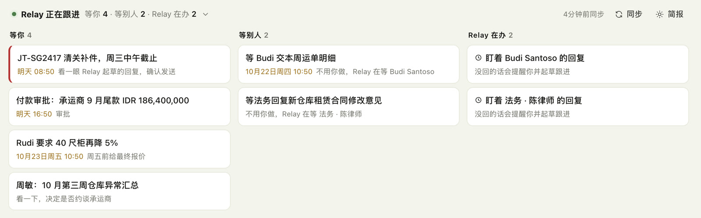
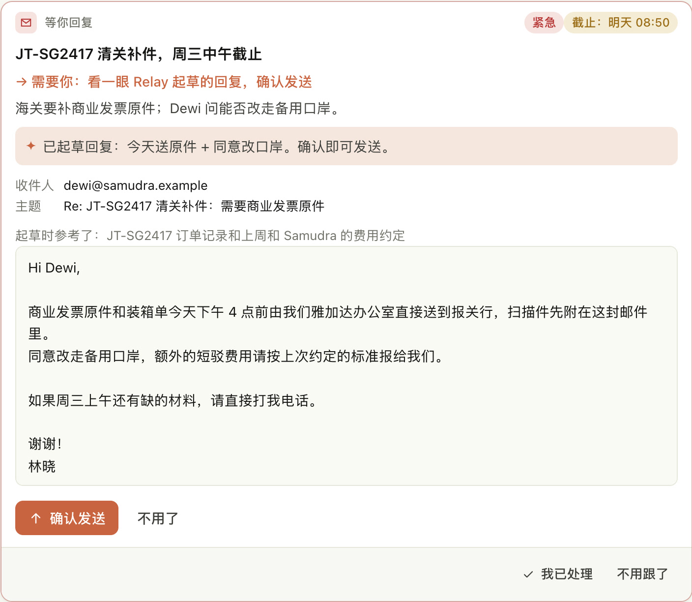
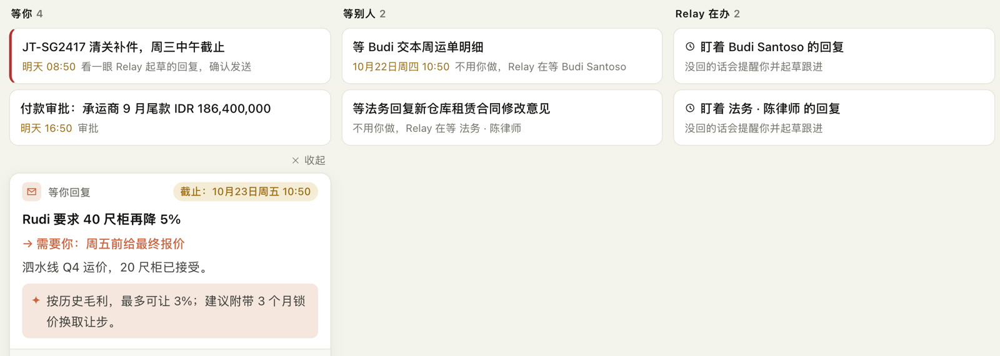
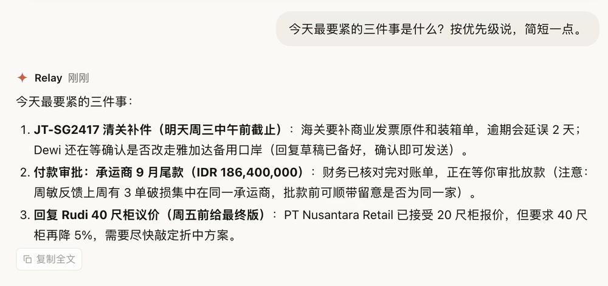
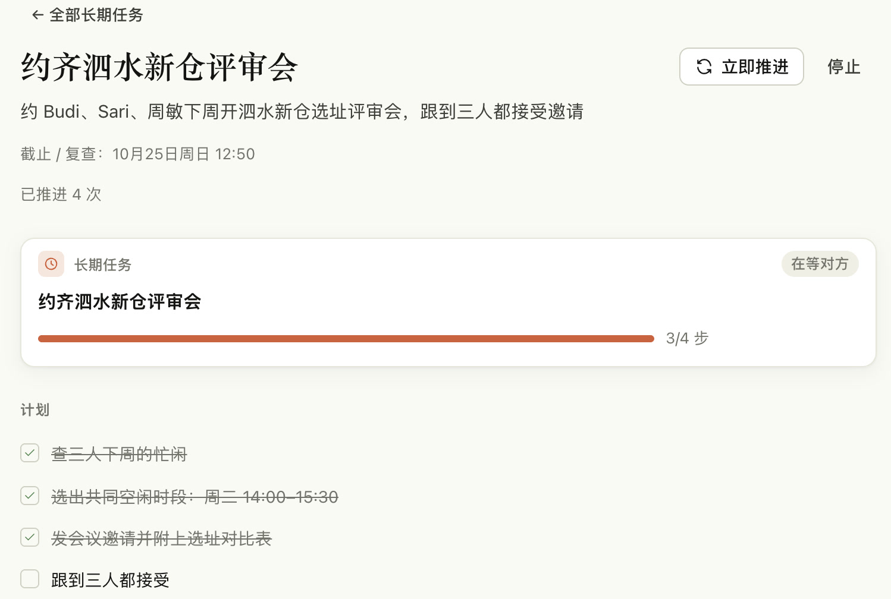
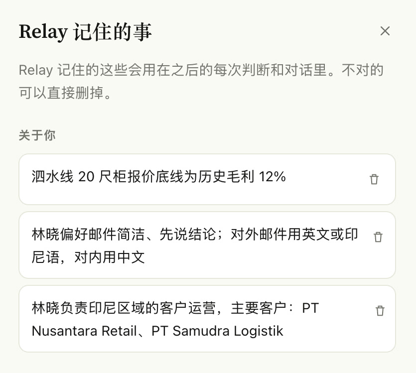
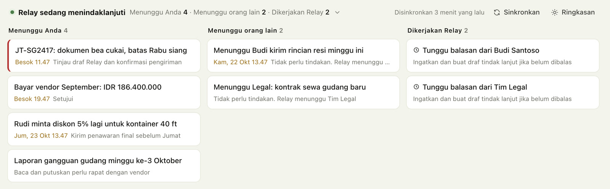

08:30打开 Relay
一早打开，昨晚到今早的事已经分好了
邮件、日程、审批、群里@你的消息，按“事”归并：同一封邮件线程是一件事，同一个人一天发来的一批邮件也是一件事。看板分三栏：等你处理的、在等别人的、Relay 正在替你办的。

Relay 是公司内部的 AI 助理。它把散落在邮箱、日历、审批和飞书群里的消息整理成一件件待办，回复先替你起草好，需要来回追的事在后台一直跟到办完。
林晓负责印尼区域的客户运营。
邮件、日程、审批、群里@你的消息，按“事”归并：同一封邮件线程是一件事，同一个人一天发来的一批邮件也是一件事。看板分三栏：等你处理的、在等别人的、Relay 正在替你办的。

海关要补交 JT-SG2417 的商业发票原件，对方还问能不能改走备用口岸。Relay 把它标成紧急，参考订单记录和上周的费用约定起草了回复。可以直接改，也可以跟它说“语气再正式一点”。

点“确认发送”才会发出。按钮只认点击的本人。
Rudi 接受了 20 尺柜报价，但想把 40 尺柜再压 5%。Relay 记得泗水线的毛利底线，建议最多让 3%，并用 3 个月锁价换这个让步。

有事直接说，不用找菜单。下面是 Relay 的原样回答。批付款那一条，它自己把周敏周报里“3 单破损集中在同一承运商”联系了进来，提醒批之前先确认是不是同一家。

帮我约 Budi、Sari、周敏下周开泗水新仓评审会，跟到大家都确认。
Relay 查了三人的忙闲，选出共同空闲时段，发了邀请。现在 Budi 和周敏已接受，它在等 Sari，周四上午还没回就再提醒。每一步都能在任务页看到，哪些事允许它自动做也由你勾选。

它记得你负责哪些客户、写邮件的习惯、报价底线，用在之后每次判断里；记错了可以直接删。印尼同事打开就是印尼语界面，用印尼语或英语跟它说话，它也用同样的语言回答。


这封邮件帮我回一下，说我们周四前给方案
盯着客户 A 的报价，直到他确认
每周一早上把上周的异常单整理给我
Tolong ingatkan Andi soal laporan gudang besok pagi